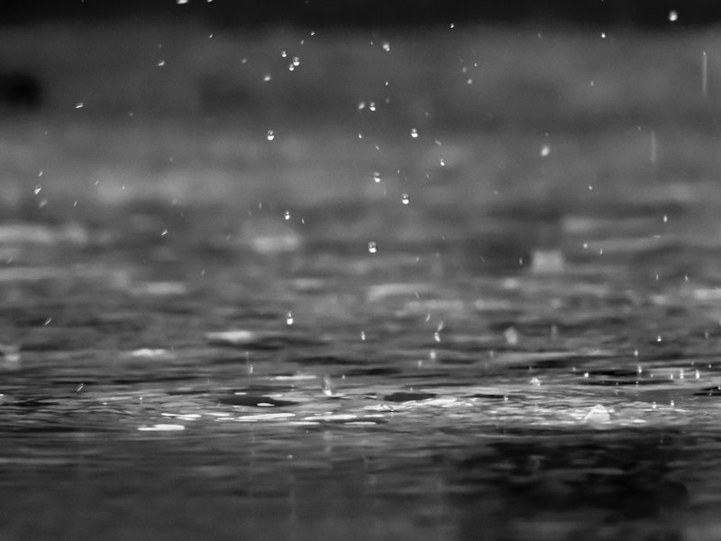
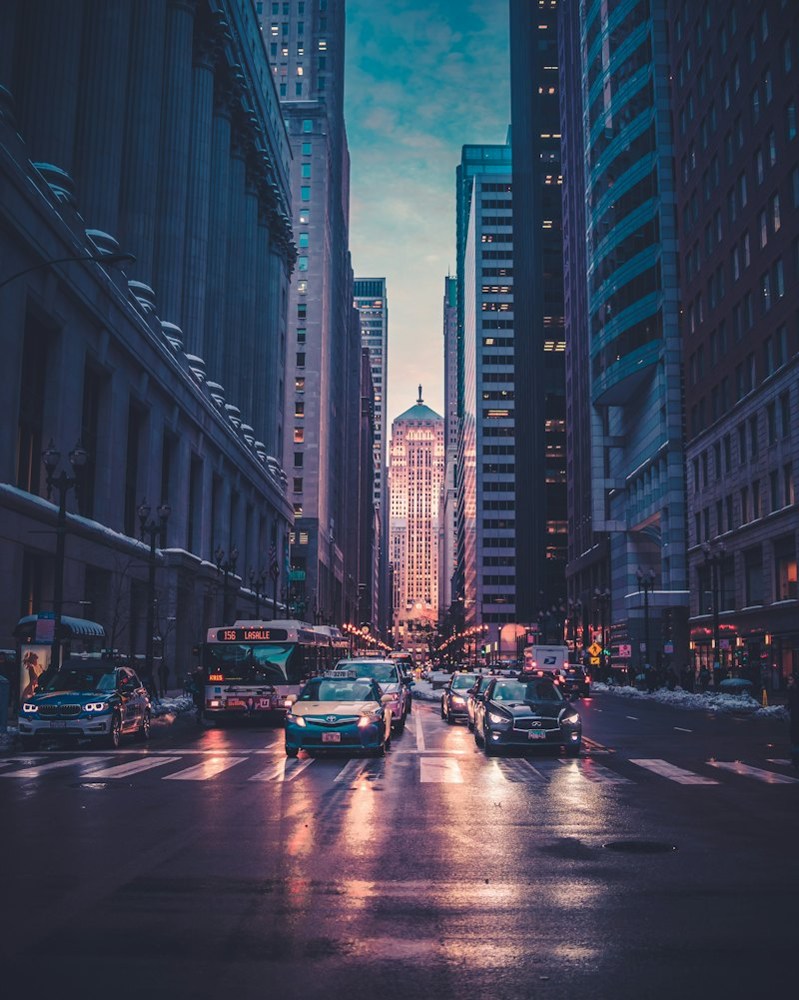

九月二十六日 · 夜
今天，想跟你说几句实话。
心里话 · 第 12 封01
开场 · 一句钩子
同一份演示口播，四种长相。信纸族（A1 / A2）：句子当主角，纸感底、生活空镜穿插，气质暖； 快闪族（B1 / B2）：连空镜都不要，字就是画面，全靠节奏。看四件事—— ① 一句一屏的呼吸感 ② 关键词的强调方式 ③ 空镜上字幕压不压得住 ④ 哪款像「你」。
楷体大字 + 马克笔划线，像有人拿笔在纸上写给你。日期和落款营造「一封信」。适合絮叨的、软一点的心里话。

宋体 + 赭红双色，克制、不花哨，几乎没有装饰。适合偏严肃、偏认知的内容，久看不腻，也最不挑素材。

零素材、零空镜，全屏大字跟读，强调词变荧光黄放大，配合词级节奏一行行砸出来。工程上最快能跑通，吃稿子本身的成色。
B1 的结构搬到纸上：黑体 + 朱红 + 一个巨大的引号。左对齐、直上直下，比黑底柔和，比信纸族硬朗。适合收着说、有锋利感的内容。